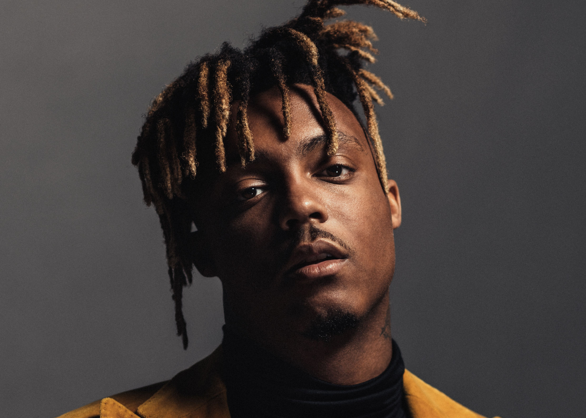

Juice Wrld
1998-2019
About Juice
Jarad Anthony Higgins (December 2, 1998 – December 8, 2019), known professionally as Juice Wrld (pronounced "juice world"; stylized as Juice WRLD), was an American rapper, singer, and songwriter. He was a leading figure in the emo rap and SoundCloud rap genres which garnered mainstream attention during the mid-late 2010s. His stage name was derived from the film Juice (1992) and he stated it represents "taking over the world".